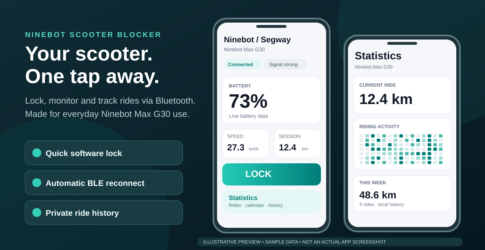

One-tap software lock
Lock or unlock the tested G30 from the app or notification, without digging through menus.
A small Android companion built by a G30 owner: quick software lock, persistent Bluetooth reconnection, live battery and charging notification, and ride statistics stored on your phone.
No account, cloud, subscription or firmware flashing. Hardware-tested on one Ninebot Max G30.

Lock or unlock the tested G30 from the app or notification, without digging through menus.
Keeps trying to maintain your own authenticated Bluetooth session and reconnect when possible.
Battery %, speed, session distance, connection status, charging indication and lock controls.
After disconnecting, the notification can keep the last known battery reading visible for up to 30 minutes.
Local ride sessions, a 17-week activity calendar and day/week/month statistics with JSON backups.
Optional phone chime when the battery reaches 100% during an actively monitored charge.
The lock button is directly in the Android notification while connected. If you walk away and Bluetooth drops, the notification changes to RECONNECT and retains the last known battery percentage for up to 30 minutes — useful for a quick check when you've left the scooter behind.
The disconnected reading is historical, not live. Android background behavior varies by device.
Example layout and values — illustration, not a screenshot.
The app was created and tested using one personally owned Ninebot Max G30. Other models are not verified, and switching among different scooters hasn't been thoroughly tested.
Have another Ninebot or Segway model? Share a hardware test report or send a pull request. Help from other owners is very welcome.
The built-in software lock adds some friction against opportunistic ride-offs, but someone could still carry your scooter away. An active BLE connection may make competing control connections harder while it lasts, but it cannot guarantee protection. Always use a physical lock when leaving the scooter unattended.
Not verified. The hardware-tested baseline is one Ninebot Max G30; different models and firmware generations may use incompatible protocols.
Yes, while the phone is connected, use the LOCK / UNLOCK action in the persistent Android notification.
No. Software lock and a maintained Bluetooth session are secondary deterrents, not substitutes for a physical lock.
It can show the last known battery and ride distance for up to 30 minutes after disconnection, with RECONNECT available. It is not a live remote measurement.
No. Download the APK from official GitHub Releases. The app communicates over Bluetooth and stores ride history locally, without GPS route recording.
No. This is an independent community project and is not affiliated with Segway-Ninebot.
Download the latest official APK or inspect the source code first. Feedback and verified compatibility reports are welcome.